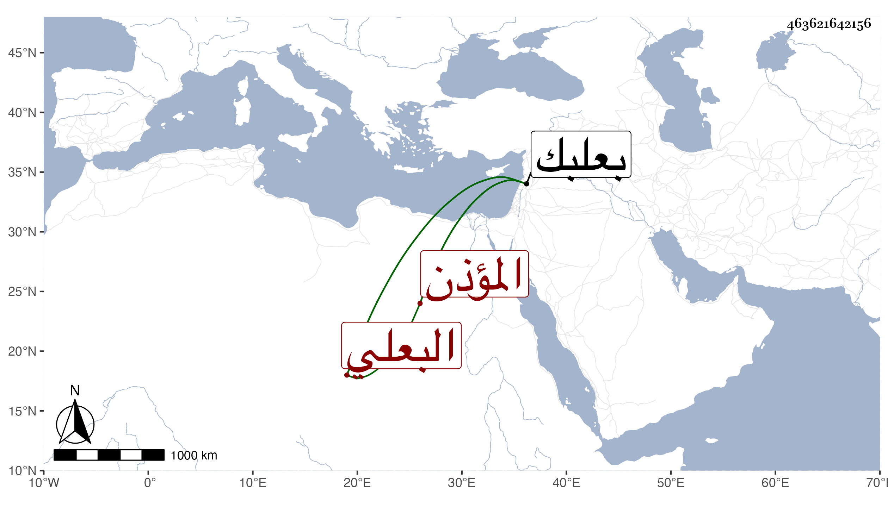

0902Sakhawi.DawLamic.ITO20230111-ara1.EIS1600.463621642156
Biography ID: 463621642156
125
محمد بن الشيخ أحمد بن محمد بن حسين البعلي المؤذن هو وأبوه ويعرف أبوه لطوله وضخامته بالمأذنة . ولد قبيل التسعين وسبعمائة ببعلبك . ونشأ بها فسمع على الزين عبد الرحمن بن الزعبوب صحيح البخاري بفوت . وحدث قرأت عليه ببعلبك ثلاثيات الصحيح . وكان إنسانا حسنا . مات قريب السبعين .
